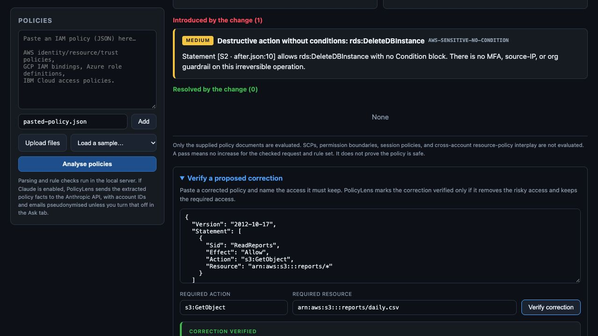
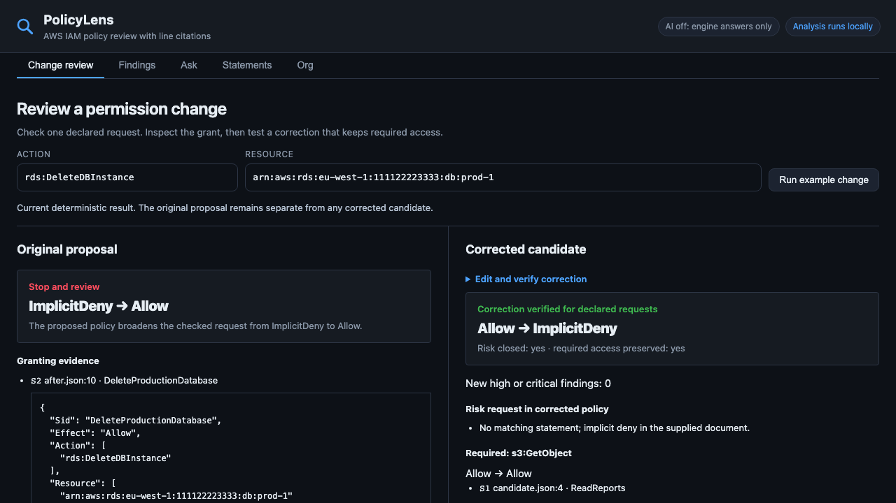

Prove the correction while keeping the original risk visible
A cited permission-change review with separate original and corrected outcomes, recoverable input errors and a portable record.
The problem
A policy diff shows edited JSON, but a reviewer needs to know whether a sensitive request became reachable and whether the correction preserves required access.
Before and after
Actual captures of the same synthetic task at 1280 × 720. Open either image to inspect the full detail.




Screenshots show the interaction change. They do not establish time saved, adoption or a measured business outcome.
What changed
Before. Change review was behind account-analysis tools. Inputs and large policy editors dominated the page. Old results could remain current-looking after edits; there was no portable review record.
After. The workbench opens directly into change review. The original ImplicitDeny to Allow result stays stopped beside the corrected candidate. Changes invalidate affected results, late responses are discarded, and exports bind inputs to engine and source identities.
Complete journey
- Run the synthetic example, or paste current and proposed policies with one declared action, resource and context.
- Inspect the stop/review/pass outcome and granting statement with its source line.
- Verify a corrected candidate. It must close the declared risk, preserve definite required access and avoid introducing a high or critical finding.
- Export JSON with original and corrected evidence, identities and explicit limits. The published demo runs its deterministic engine in your browser without uploading policies.
Evidence and practical value
The example cites S2 at after.json:10 for the added rds:DeleteDBInstance grant. The corrected candidate removes that access while retaining s3:GetObject on the report. Validation includes 133 engine/module assertions, four server-browser journeys, a browser-local publication journey, an authored 55-case benchmark and six grounding expectations. These are authored tests, not independent AWS parity evidence.
The value demonstrated here is an inspectable, complete review handoff with clear failure and recovery states. The next test is whether representative users find it useful in their own workflow.
Limits
The supplied documents and declared requests define the scope. SCPs, permission boundaries, session policies and cross-account interactions are excluded. AWS Access Analyzer already checks for new access; PolicyLens offers a smaller local review workflow. Independent AWS simulator comparison remains outstanding. The public browser demo has no AI or account-analysis service.
Independent public project by Matthew Paver. Synthetic demonstrations, updated 22 October 2026. No client deployment or measured commercial result is claimed.